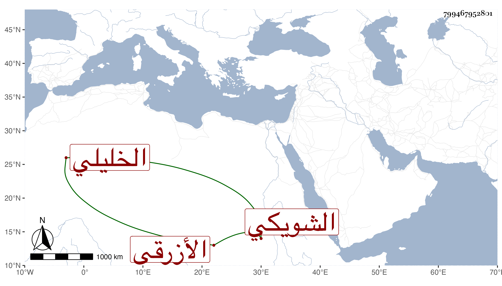

0902Sakhawi.DawLamic.ITO20230111-ara1.EIS1600.799467952801
Biography ID: 799467952801
200
محمد بن أحمد بن محمد بن يوسف بن محمد بن منصور بن موسى الشمس ابن الشهاب الشويكي الأصل الخليلي الأزرقي الماضي أبوه ويعرف بالشافعي . ولد ظنا في سنة ثلاث وثلاثين وثمانمائة وقرأ صحيح البخاري على الجمال بن جماعة وسمع على أحمد بن الشحام وغيره وتفقه بالكمال بن أبي شريف ولازمه مدة . وأجاز له العلم البلقيني . مات في يوم عاشوراء سنة ثلاث وتسعين ووصفه الصلاح الجعبري بالشيخ العالم .
